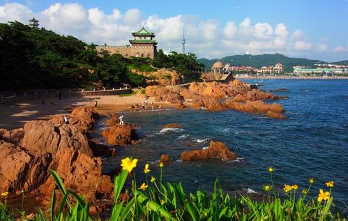
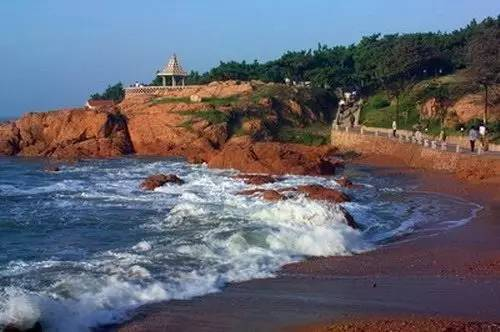
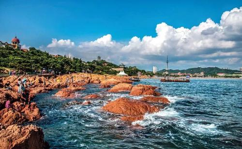

青岛鲁迅公园
时间：2019/11/11

【简介】
鲁迅公园为汇泉景区第一景点，也是青岛最富特色的临海公园。公园沿狭长基岩海岸东西伸展，东临青岛水族馆和第一海水浴场，全长连绵2公里，以海湾、 礁石丛和婀娜多姿的黑松林带交织成海滨自然风光。 公园内红礁、碧水、青松、幽径、亭榭逶迤多姿，景色迷人，是一处兼有园林美和自然美的风景区。有“山穷路断疑断崖，临岸回折又一景”的情趣
【历史】
德国侵占青岛后, 相继在沿海各岬角、坡岸营造海岸防风沙林带,汇泉湾北侧也逐年栽植黑松。 1903年,第一海水浴场建成,当局招徕京、津、沪及东南亚各国的欧洲商人到青岛避暑,海水浴场成为外国人 的乐园,浴场西北侧的黑松林带就成为游人蔽日观景之处。 青岛解放，公园已具相当规模。1950年，为了纪念鲁迅先生，经青岛市各界人民代表会议批准,公园改名为“鲁迅公园”。同时对公园进行整修:铺设园路; 补装台阶;维修观景亭;将原来的木质牌坊底座、立柱改为石质,补装台阶,牌坊顶部的吻兽改和平鸽造型,开创了在古建筑上采用新的动物造型的先例。 公园正门入口处为中国古典式石牌坊，正书“鲁迅公园”，背面“蓬壶揽胜”系中国著名碑帖书法家郑世芬所书。1966年,在公园内建成700平方米的露天海豹池。 迎门鲁迅先生花岗岩雕像系1986年10月鲁迅先生逝世50周年之际全市青年捐款所建。同年重新彩绘牌 坊图案,修旧如故,保留原貌;在公园西南角开修了一条通向小青岛公园的道路。 2001年，新建“鲁迅自传碑”、“鲁迅诗廊”、“呐喊台”等景点，是一处别具特色的海滨公园。公园内还有1932年1月20日竣工落成的青岛水族馆。

【交通信息】
鲁迅公园距青岛流亭机场距离约:36公里，车程时间约:60分钟；距青岛汽车站距离约:16公里，车程时间约:30分钟；距青岛火车站距离约:5公里，车程时间约:10分钟； 距青岛市中心距离约:9.9公里，车程时间约:20分钟；距青岛渡口距离约:7公里，车程时间约:15分钟；距当地地标性建筑（栈桥）距离约:5公里，车程时间约:10分钟。 公交：6路、26路、202路、214路、223路、228路、231路、304路、311路、312路、316路、321路、501路、504路、都市观光1号线、隧道2路、隧道6路车，到鲁迅公园（又名海底世界站）下车。